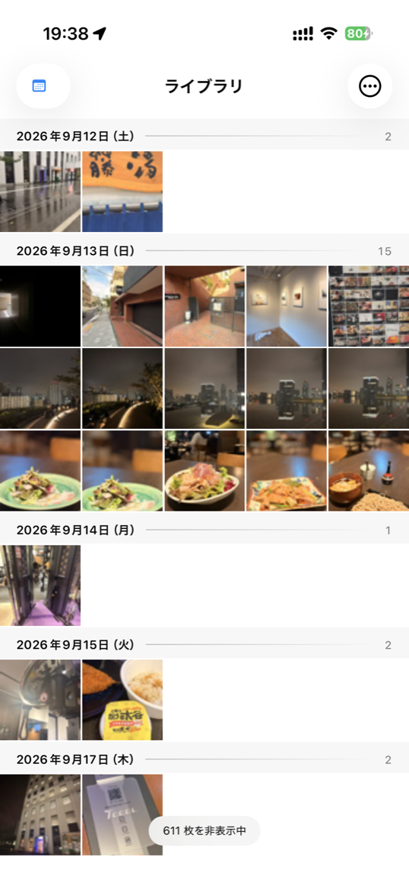
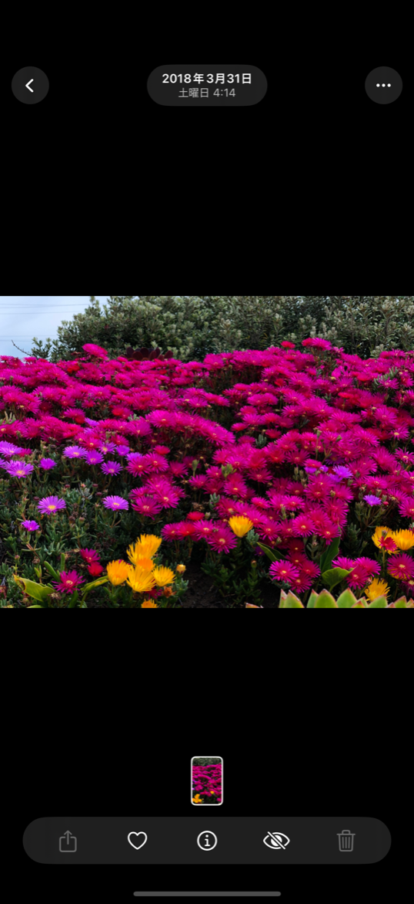
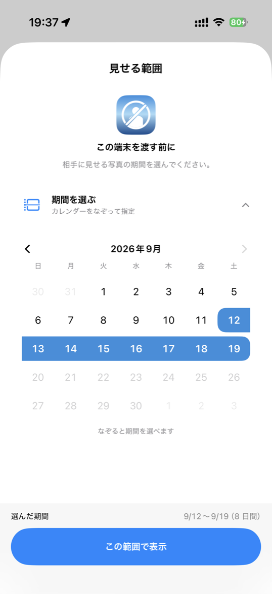
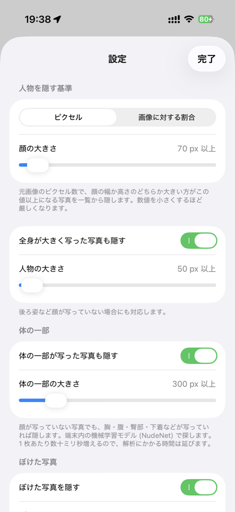
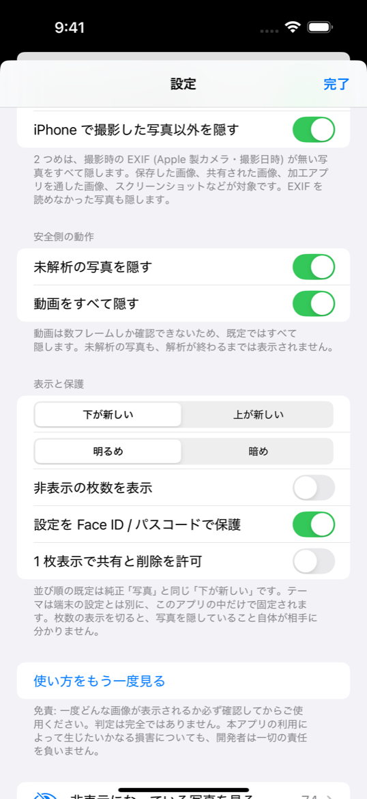
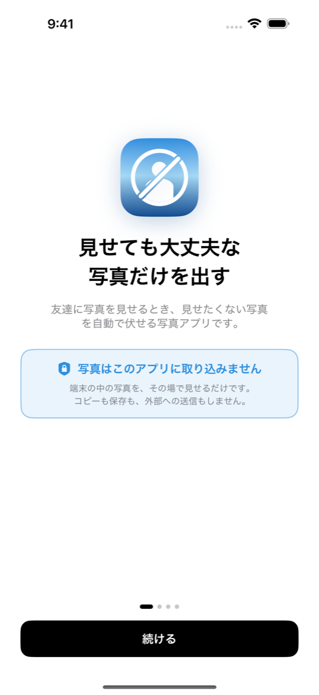

人物が大きい写真は出てこない
顔（または全身）が設定した大きさ以上に写っている写真は、一覧にも 1 枚表示にも並びません。相手の操作では到達できません。
人物が大きく写った写真を、一覧からも 1 枚表示からも自動で伏せる閲覧専用の写真アプリ。 相手がどれだけスワイプしても、伏せた写真にはたどり着けません。
旅行の写真を見せたい。でも隣に並んでいる写真は見せたくない。 アルバムを作り直したり、その場で慌ててスワイプを止めたりする代わりに、このアプリを開いて渡します。
顔（または全身）が設定した大きさ以上に写っている写真は、一覧にも 1 枚表示にも並びません。相手の操作では到達できません。
解析は iPhone の中の Vision だけで完結します。ネットワーク通信は行わず、画像もサムネイルもアプリ側には保存しません。
起動のたびに、すべて／直近 1 週間／直近 1 か月／カレンダーをなぞって指定、から見せる範囲を選びます。選ぶまで写真は 1 枚も出ません。
設定画面は Face ID／パスコードで保護。端末を渡した相手がしきい値をゆるめたり、伏せた写真を覗いたりはできません。
胸・腹・臀部・下着などが写った写真は、顔が写っていなくても伏せます。端末内の機械学習モデルで判定し、こちらも画像は外に出ません。
未解析・解析失敗・ぼけていて判定できない写真は、すべて安全側に倒して非表示にします。動画も既定では出しません。
ピンチで 1→3→5→7 列、日付ごとの仕切り、タップで全画面、左右スワイプで送り。純正の「写真」と同じ感覚で渡せます。
写真そのものを持ち出さず、「顔の大きさ」という数値だけを端末内の索引に残します。
選んだ期間の写真だけを新しい順に読み、iOS の Vision と端末内のモデルで顔・人物・体の一部を検出します。進捗と「どこまで判定済みか」は画面に出ます。
検出した矩形の長辺を元画像のピクセル数に換算して保存します。残るのは数値だけで、画像は保存しません。
保存した数値としきい値を毎回くらべて出す／出さないを決めます。基準を変えても、解析のやり直しは不要です。
基準は設定画面で調整できます。以下は初期設定の状態です。
| ルール | 初期値 | 内容 |
|---|---|---|
| 顔の大きさ | 300px／12% | 顔の長辺が指定ピクセル以上、または写真の長辺に対する割合以上なら非表示。0 にすると「顔が写っていれば全部隠す」。 |
| 全身の大きさ | オフ | 後ろ姿など顔が写っていない写真にも対応したいときに有効化します。 |
| 体の一部 | 300px／12% | 顔が写っていない写真でも、胸・腹・臀部・下着などが写っていれば伏せます。端末内の機械学習モデル（NudeNet）で探します。 |
| ぼけた写真 | オン | ぼけた写真は人物の検出自体が当てにならないため、「写っていない」と「見分けられない」を区別して後者を隠します。 |
| スクリーンショット | オン | 撮影した写真ではないものをまとめて伏せます。 |
| この iPhone 以外の写真 | オン | 撮影時の情報を持たない写真（保存した画像・共有された画像・加工アプリを通した画像など）を伏せます。 |
| 動画 | すべて非表示 | 動画は一部のフレームしか確認できないため、既定では出しません。 |
| 期間 | 起動時に選択 | 選んだ期間の外にある写真は、顔の大きさに関わらず出ません。 |
Face ID の内側（＝相手には開けない場所）に、伏せている写真の一覧があります。 セルごとに「顔 420px（基準 300px）」「撮影時の情報なし」「スクリーンショット」といった理由のバッジが付き、 理由で絞り込んで中身を確認できます。渡す前の確認を、隠している側からも行えます。
見た目も操作も、純正の「写真」に寄せています。





